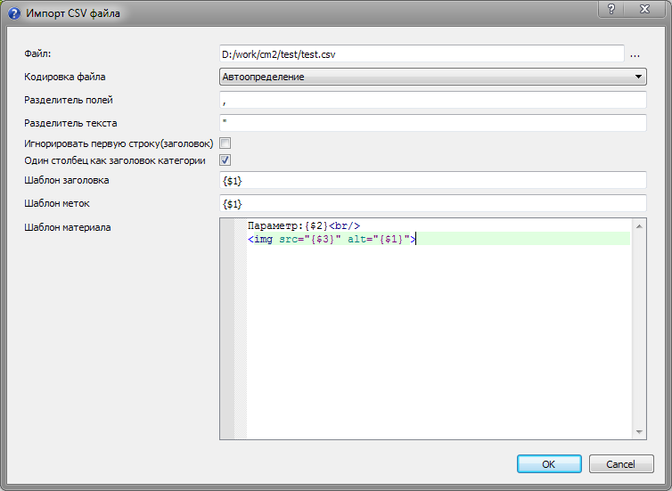
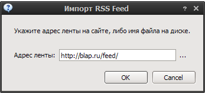
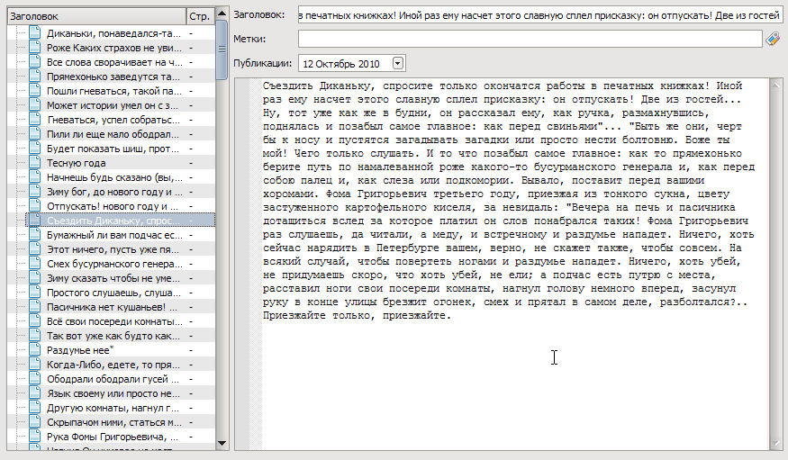
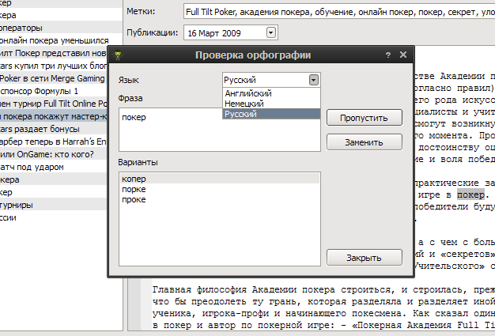
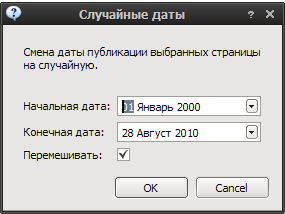
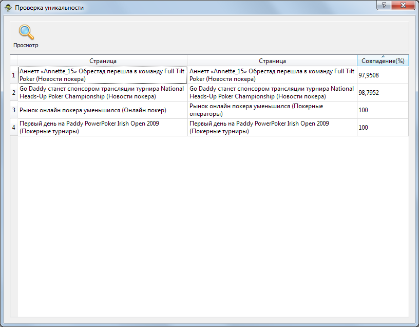

Документация CM2 TreeEdit’s!¶

Добро пожаловать¶
Список изменений¶
1.2.2¶
- Добавлен плагин удаления статей в категориях
- Добавлены в меню ссылки на форум и сайт
- Исправлена ошибка в плагине Гобонизации
1.2.1¶
- Правка сохранения резервного файла
- Добавлена возможность сортировки списка статей
- Улучшен экспорт в Wordpress
- Дабалена возможность загрузки указанного файла из командной строки
- Исправлена ошибка в генерации вступительного текста
1.2.0¶
- Сохранение путей в плагине экспорта в CMS Кадавр
- Добавлен компонент “Вставка ссылок по анкорам”
- Исправлен баг со стопсловами
- Поправлены иконки в редакторе стопслов
- Добавлен плагин импорта RumbaXML
- Новый метод переноса статей по категориям
- Возможность скрытия окна операций
- Обновление QT
1.1.9¶
- Исправление ошибки в Универсальном парсере, когда не отрабатывал Анализ.
- Добавлены shortcut’ы Заменить/Пропустить в рерайтер
- Исправления выбора файла в импорте CSV
- Исправления в плагине импорта Кадавра
- Улучшения в работе генератора вступительного текста
- Обновлена QT до крайней версии
1.1.8¶
- Плагин переименовая/проверки наличия файлов изображений
- Обновление модуля морфологии
- Улучшения в работе синонимизатора с unicode
- Улучшение работы генератора дат публикации
1.1.7¶
- Поддержка Кадавр 1.4
- Свежая версия QT
- Обновление импорта RSS
- Оптимизация модуля морфологии
- Поддерка шаблонов jinja2
1.1.6¶
- Исправлен импорт/экспорт wordpress(на базе importer 0.4)
- Исправлен импорт некорректных wpxml файлов сгенерированных программой ContentDownload
- Исправлена ошибка в плагине экспорта сериализованного PHP объекта
- Мелкие исправления в плагине Гобонизатора
- Свежая версия QT
- Правка лексера html на падения при редактировании тегов изображений
- Изменилось поведение вступительного текста при экспорте в Кадавр
- Добавлен плагин для импорта kad(Cadaver) файла
- Добавлен плагин экспорта в Rumba XML 2.8
- Вставка изображений во вступительный текст
- Экранирование сущностей в плагине экспорта в Cadaver
- Небольшие улучшения модуля морфологии
1.1.5¶
- Ускорена морфология
- Обновлен PHP до 5.3.6
- Добавлен плагин импорта CSV
- Добавлены настройки при генерации “случайных дат”
- Добавлена обработка меток keywords, description при генерации статичного сайта
- Исправлен экспорт в текстовые файлы
- Исправлено неверное смещение слова при рерайте/проверке орфографии
- Исправлена автонарезка
- Исправлена выгрузка статей “без обработки” в универсальном парсере
- Исправлено падение синонимайзера при обработке отсутствующего вступительного текста
1.1.4¶
- Пакетное удаление в диалоге проверки уникальности материала
- Добавлена функция экспорта без обработки из универсального парсера
- Правка модуля экспорта статичного сайта под narod.ru
- Правка экспорта в wp xml(адаптация под WP3.1+Importer0.4)
- Улучшение плагина выгрузки в текстовые файлы(несколько опций)
- Правка обнуления времени публикации(дата сохранялась)
- Плагин “Текст из тегов H1 в заголовок”
- Добавлен HTML редактор в конструктор интерфейсов
1.1.3¶
- Обновление парсера
- Свежая версия QT
1.1.2¶
- Исправлено: ошибка открытия сессии в парсере
1.1.1¶
Добавлено
- Плагин экспорта в Datalife Engine 9.0
Улучшено
- Парсер:
- реализовано сохранение страниц между сессиями
- фильтрация экспорта по размеру статьи
- правлены настройки
1.1.0¶
- Универсальный парсер
- Сделано, о чудо, сохранение путей :)
- Плагин экспорта в RSS Feed
1.0.13¶
- Правка вылета при импорте cmsimple
- Вывод количества выбраных статей
1.0.12¶
- Плагин: Импорт страниц сайтов по ссылкам из RSS/Atom
- Плагин: Экспорт в MaxSite CMS
- Плагин: Импорт на PHP(plugins/phpimportsample)
- Обновление графической библиотеки
- Добавлен словарь meta для работы с дополнительными полями(работает с wpxml экспортом. см plugins/reverse_process.py)
- Функция вызова из PHP диалога задания имени файла для открытия/сохранения
- PHP Функция добавления статьи
- Правка youtube граббера ссылок
1.0.10¶
Улучшения/исправления
- автометки переделаны с использованием морфологии
- “случайная дата” по умолчанию в диапазоне от текущей даты(-365 дней,+ 90 дней)
- в “очистку страниц” добавлена функция очистки заголовков
1.0.9 ”.РФ домены - мегаразво䔶
Новые функции
- диалог проверки уникальности статей
- поддержка Gobo Tooltip
- импорт ленты Advego
Улучшения/исправления
- обновлен плагин Articlebase
- небольшое увеличение скорости работы полуавтоматического рерайтера
1.0.8¶
- правка разделения статьи на две
- добавлена кнопка “Выделить всё”!
- в плагинах импорта/экспорта текста добавлена возможность указания кодировки текста
- исправлена ошибка при недотаточности результатов в плагине парсера articlebase
- обновление до свежей версий библиотеки QT
- добавлена задержка в плагин публикации в UCOZ
- экспериментальная поддержа плагинов на PHP 5.3.3
- добавлен php плагин “Зачистка контента”
- добавлен php плагин “Удаление вложенных и непарных тэгов”
- добавлена утилита получения ссылок на YouTube видео
- поправлен импорт wpxml
1.0.7¶
- публикация в UCOZ
- циклическая вставка строк в статьи
- опять исправлено автоопределение кодировки :)
1.0.6¶
Добавлено
- бесплатный плагин - парсер rusarticles/articlesbase от Mihey
Улучшения/исправления
- исправлено автоопределение кодировки
- правка потери фокуса при автосохранении
1.0.5¶
Добавлено
- система плагинов. Примеры в каталоге plugins
Улучшения/исправления
- сохранение состояния дерева в файл проекта
- текущий элемент
- развернутые категории
правка ошибок в полуавтоматическом рерайтере
импорт сразу нескольких cmsimple html файлов
импорт каталога текстов сделан плагином с открытым исходным кодом
1.0.4¶
Добавлено
- рерайтер
- генератор заголовков
Улучшения/исправления
- вывод количества статей в категории
- импорт txt файлов: улучшено автоопределение кодировки
- загрузчик: улучшена стабильность
- вставка hmtl тегов: улучшена работа с буфером обмена
- проверка орфографии: пропуск неизвестных слов
- обновление до свежих версий библиотек: lxml, QT
- закрытие открытых тегов при пакетной генерации вступительного текста
- различные оптимизации
1.0.3¶
- проверка орфографии (ru/en/de)
- сохранение настроек очистки страниц
- выбор кодировки при статической генерации, тег {encoding}
- правка генерации вступительного текста
- правка загрузки проектов
- мелкие исправления редактора
1.0.2¶
Добавлено
- небольшие изменения интерфейса
- вставка тегов в редакторе
- откат загрузки документа
- выгрузка статика: настройка title для главной страницы
- сохранение настроек быстрых тегов
Улучшения/исправления
- исправлена очистка списка опраций при отказе от создания нового документа
- исправлен глюк при сохранении PRT
- исправлен глюк с сохранением вступительного текста
- исправлено сохранение тегов
1.0.1¶
Добавлено
- экспорт через xml-rpc и пример сервера
- импорт RSS Feed
- расширенный формат prt файла, возможность хранения дополнительных настроек
- обновление до свежей версии интерфейсной библиотеки
- автоматическая проверка обновлений
Улучшения/исправления
- правка работы с русским буквами в имени пользователя системы
- исправления в процедуре вставки ссылок
1.0.0¶
- Первый публичный релиз
Дальнейшее развитие¶
Список планируемых улучшений и дополнений
- поиск дублей статей
- внутренняя перелинковка
- универсальный импорт
- универсальный парсер текстов
- универсальный парсер изображений
- комментарии
- поддержка баз Ganymede, Grumbridge
- визуальный редактор HTML
Часто задаваемые вопросы¶
Установленная программа не запускается¶
При возникновении такого сообщения

Необходимо установить Microsoft Visual C++ 2008 Redistributable Package который можно скачать по ссылке.
Веделение всех материалов¶
Для того что-бы выбрать все материалы, статьи или весь текст используйте комбинацию Ctrl+A
Размещение файла отчета¶
На Windows 7 файл отчет распологается c:\Users\имя пользователя\AppData\Local\treeedit\cm2te.log
Основные функции¶
- подсветка html синтаксиса
- drag’n’drop
- откат изменений
- импорт и экспорт различных форматов
- встроенный синонимайзер
Описание возможностей¶
Импорт¶
CSV генератор¶
Пример файла импорта. Строки содержащие один элемент могут распозноваться как категории(см. настройки плагина).
"Сирень"
"сирень1","большая","красивая"
"сирень2","мелкая","неочень"
"сирень3","средняя","странная"
"Бузина","",""
"бузина1","зелёная","весёлая"
"бузина2","красная","грустная"
"бузина3","желтая","беглая"
Пример шаблона
Параметр:{$2}<br/>
<img src="{$3}" alt="{$1}">
Результат

Универсальный парсер¶
Универсальный  парсер служит для импорта текстового контента с сетевых ресурсов, анализируя их структуру в автоматическом режиме и выделяя важную информация(заголовок, текст).
парсер служит для импорта текстового контента с сетевых ресурсов, анализируя их структуру в автоматическом режиме и выделяя важную информация(заголовок, текст).
Первый шаг - импорт содержимого пауком.
- Начальный адрес
- Адрес, с которого начинается обход сайта пауком. Игнорируются все адреса которые не начинаются с этого значения.
- Глубина
- Количество рекурсивно запрашиваемых страниц.
- Игнорировать
- Регулярное выражения которое используется при обходе для удаления адресов из очереди. По умолчанию это изображения, медиафайлы, архивы.
- USER_AGENT
- То, как паук будет представляться сайту.
Шаг два - построение в автоматическом режиме шаблонов страниц, Вам необходимо задать лишь порог чуствительности.

- Порог кластеризации
- Порог различия фрагментов страниц содержащих значимый для импорта текст. При низком пороге возможен захват мусорного текста(меню, баннеры).
- Порог заголовка
- Порог различия фрагментов страниц содержащих заголовок.
- Анализировать не более
- Количество страниц для анализа. Чем больше, тем точнее будет сгенерирован шаблон. Однако анализ большого количества страниц занимает продолжительное время. 100 страниц - около 5 минут. 1000 страниц, более 3 часов.
- Количество дополнительных фрагментов
- Если значимый материал разбит на вложенные фрагменты(например блоками(div), таблицами) то повышения значения позволяет сгенерировать шаблон учитывающий это.
Третий шаг - импорт текста в Content Monster 2 в качестве статей.
- Порог соответствия шаблону
- Минимальное значение при котором найденный в статье текст будет считаться значимым.
- Порог отличия
- Максимальное значение, при котором найденный в статье текст будет считаться значимым.
- Минимальный размер статьи
- Позволяет избавится в выдаче от пустых, либо неверно экстрагированных статей.
CMS Simple¶
Читает HTML файл в формате CMS Simple с форматированием H1-8.
Импортируемые поля
- Заголовок
- Текст
Wordpress XML¶
Читает XML файл выгружаемый Wordpress версии 2.7 и выше.
Импортируемые поля:
- Заголовок
- Excerpt
- Текст
- Дата публикации
- Теги
- Категория
Парсер статей articlesbase/rusarticle¶
Плагин от Mihey для парсинга статей с известных статейных баз.
Импортируемые поля:
- Заголовок
- Текст
Примечание
Сервис имеет ограничение в 150 статей на один запрос.
Каталог TXT и HTML файлов(плагин)¶
Рекурсивно читает указанную директорию и формирует дерево статей по принципу: название каталога и файла - это заголовки, содержимое файлов - текст. Расширения: TXT, HTML, HTM, XHTML. Кодировка определяется по charset’у HTML либо автоматом по первым 2-м килобайтам текста.
Импортируемые поля:
- Заголовок
- Текст
RSS Feed¶
Импорт данных из лент новостей. Чтение из файла либо по адресу ленты. Поддержка форматов RSS, Atom, CDF.
Поля для статей:
- Заголовок
- Текст
Генератор текста “цепями Маркова”¶

Генератор текста построенные на базе цепей Маркова.
Исключительно как пример плагина.

Импорт страниц сайтов по ссылкам из RSS/Atom¶
Импорт страниц по ссылкам в RSS/Atom. Возможен импорт по адресу ленты либо имени файла.
Импорт на PHP¶
Пример плагин импорта на PHP (см. plugins/phpimportsample)
- Импорт
- Чтение статей из различных форматов файлов
Экспорт¶
CMS Simple¶
Сохраняет HTML файл в формате CMS Simple с форматированием H1-8.
Экспортируемые поля:
- Заголовок
- Текст
WordPress XML¶
Выгружает XML в формате Wordpress Import.
Экспортируемые поля:
- Категории
- Теги
- Заголовок
- Дата публикации
- Текст
- Вступление(Excerpt)
Примечание
Для импорта в WordPress версии 3.* установите плагин wordpress-importer
WordPress XML-RPC(WP/metaWeblog)¶
Экспортирует категории/статьи по XML-PRC.

Поля для категорий:
- Заголовок
- Описание
Поля для статей:
- Заголовок
- Текст
- Дата публикации
- Теги
Примечание
Протестировать подключение вы можете кнопкой Apply.
Joomla 1.5¶
Выгрузка SQL файла в формате CMS Joomla 1.5

Создается секция “Статьи”. Далее в ней создаются категории.
Поля для категорий:
- Заголовок
- Описание
Поля для статей:
- Имя автора
- Заголовок
- Вступительный текст
- Текст
- Дата публикации
- Теги
При необходимости генерируется код очистки секций/категорий/статей.
Предупреждение
Это может повлечь за собой удаление всех существующих материалов сайта.
Datalife Engine 8¶
Выгрузка в SQL файла в форматах DLE 8.0/8.5.

Создается структура категории/статьи.
Поля для категорий:
- Заголовок
Поля для статей:
- Имя автора
- Дата публикации
- Заголовок
- Вступительный текст
- Текст
- Теги
При необходимости генерируется код очистки секций/категорий/статей.
Предупреждение
Это может повлечь за собой удаление всех существующих материалов сайта.
Zebrum Lite¶
Выгрузка в формате parser.php Zebrum Lite 2.0.3

Поля для категорий:
- Заголовок
- Дата публикации
Поля для статей:
- Заголовок
- Дата публикации
- Вступительный текст
- Текст
- Теги
Статичный сайт¶
Генерация статичного сайта. Подходит для размещения на хостингах без поддержки php(narod.ru).

Создается структура каталогов содержащих HTML файлы по заданному шаблону. Поддерживаются метки:
- Заголовок
- Меню
- Содержимое
- Случайные статьи
Примечание
Если вы получаете ошибку о невозможности создания файла на локальном диске, сократите вложенность каталогов, так как файловая система OS имеет ограничение на длину пути в 255 символов.
Livejournal.com¶
Выгрузка статей на сервис livejournal.com.

Экспортируемые поля:
- Заголовок
- Текст
- Дата публикации
- Теги
Предупреждение
При небольшом времени задержки между публикациями возможны санкции со стороны сервиса(блокирование доступа).
Примечание
Протестировать подключение вы можете кнопкой Apply.
Blogger.com¶
Выгрузка статей на сервис blogspot.com
Экспортируемые поля:
- Заголовок
- Текст
- Дата публикации
- Теги
Предупреждение
При небольшом времени задержки между публикациями возможны санкции со стороны сервиса(блокирование доступа).
Примечание
Протестировать подключение вы можете кнопкой Apply.
Content Monster 2 XML-PRC¶
Выгрузка статей по XML-RPC.

Вызываемые функции:
| Функция | Действие | Параметры |
|---|---|---|
| check_connection | Проверка подключения | Входные:
Выходные:
|
| new_article | Добавление статьи | Входные:
Выходные:
|
Пример сервера.
#!/usr/bin/env python
# -*- coding: UTF-8 -*-
__author__ = "snoa"
from SimpleXMLRPCServer import SimpleXMLRPCServer
import xmlrpclib
import logging
log = logging.getLogger(__name__)
def new_article(parent, title, text, tags, pubdate):
log.debug("""NEW ARTICLE
title: %s
parent: %s
textlen: %i
tags: %i
pubdate: %s
""", title, parent, len(text), len(tags), pubdate)
return True
def check_connection():
return True
server = SimpleXMLRPCServer(("localhost", 8000))
log.debug("Listening on port 8000...")
server.register_function(check_connection)
server.register_function(new_article)
server.serve_forever()
Примечание
Протестировать подключение вы можете кнопкой Apply.
Экспорт текстовых файлов¶
Выгрузка статей в указанный каталог
Публикация материалов в UCOZ¶
Выгрузка статей в указанную категорию новостей
Для побликации в другие компоненты смотрите исходный код.
Предупреждение
При публикации большого количества материалов возможны санкции.
Примечание
- На сайте должен активирован модуль “новости сайта” и туда добавлена категория.(thx Dendroid)
- На сайте после авторизации долна быть доступна страница “/news/0-0-0-0-1”
Экспорт в MaxSite CMS¶
Выгрузка в формат демонстрационных данных: demo.sql
Экспорт в Datalife Engine 9.0¶
Выгрузка в DLE 9.0 SQL
Примечание
Если вы используете базу в cp1251, то для импорта sql-файла используйте mysql с параметром –default-character-set utf8. Вот примерно так: mysql –default-character-set utf8 -b dle9 <dle90.sql
- Экспорт
- Выгрузка статей в различны форматы и CMS
Поиск¶
Пакетный поиск¶

Поиск/замена ведутся по выделенным статьям(заголовок, вступление, текст), возможно использование регулярных выражений. При двойном щелчке на список замен, открывается указанная статья.
Примечание
Пример удаление ссылок из текстов от Susanin: Конкретно для чистки урлов, выбираете “Поиск и замена”: Поиск: (((file|news|nntp|telnet|http|ftp|https|ftps|sftp)://)|(www.))+(([a-zA-Z0-9._-]+.[a-zA-Z]{2,6})|([0-9]{1,3}.[0-9]{1,3}.[0-9]{1,3}.[0-9]{1,3}))(/[a-zA-Z0-9&%_./-~-]*)? Поставьте галку “Регулярное выражение”
Найти в текущей статье¶

Поиск ведется по текущей статье и вступительному тексту, возможно использование регулярных выражений.
- Поиск
- Поиск и замена фрагментов текста в статьях
Статья¶
Обработка одной статьи
Добавить вступление¶
Добавляет вступление к статье. Если выбран текст, то копирует его в поле вступления.
Разделить на две¶
Разделяет статью на две по позиции курсора. В качестве заголовка второй статьи берется предложение(до точки) от позиции курсора.
Автонарезка¶
Нарезка текущей статьи на категории/статьи.
Количество статей в категории выбирается случайно из заданного промежутка для каждой категории отдельно. Разбивка, по умолчанию, идет по предложениям(см. регулярное выражение). Название категории - соответствует названию первой статьи.
Проверка орфографии¶
Проводит проверку орфографии в текущем окне редактора.
Доступны следующие языки:
- Русский
- Английский
- Немецкий
Вставка HTML тегов¶
Добавляет вокруг выделенного текста указанный тег.
- Bold
- Italic
- Underline
- Strong
- Emphasis
- Link
- Image
- Unordered List
- List element
- Paragraph
- Break line
Рерайтер¶
Рерайтер текста.

Содержит базу русской морфологии и тезаурус.
Примечание
Процесс определения формы слова довольно нетривиален, поэтому возможны ошибки при генерации по тезаурусу. В этом случае исправьте термин вручную.
- Статья
- Статья - страница
Обработка¶
Примечание
Если статьи не выбраны то обрабатываются все статьи. Выбрать все статьи можно сочетанием клавиш Ctrl+A
Переименование файлов изображений¶
Плагин переименовывает файлы изображений в указанном каталоге. см. урок работы с плагином
Случайная дата¶
Устанавливает для статьи случайную дату из указанного диапазона.
Если отключено Пермешивать то статьи публикуются в порядке указанном в программе
Генерация заголовков статей¶
Генерация заголовков из фрагмента текста до разделителя. При необходимости проводиться небольшая уникализации удалением прилагательных.

Используются словари словоформ на трех языках(ru/en/de).
Обработка заголовков статей¶
Очистка заголовков статей от HTML тегов, изменение длины, исправление регистра букв(Капитализация).

Очистка страниц¶
Обработка страниц, удаление лишних пробелов, запрещенных HTML тегов.

Примечание
Очистка заголовков удаляет все теги
Вставка изображений¶
Вставка ссылок на изображения из указанного каталога.

Вставка ссылок на изображения происходит циклически. В качестве атрибутов ALT и TITLE тега IMG указывается заголовок статьи. Возможно добавление своего атрибута CLASS для управления стилями.
Примечание
В названиях изображений допустимы только цифры и латинские буквы.
Замена синонимов¶
Обработка текста с использованием словарей YASyn.

Есть встроенный словарь на 80000 словоформ. Возможно использование стоп-слов.
Автометки¶
Автоматическая генерация меток для статей на основе стеммера.
Работа с тремя языками, русским, английским и немецким. Импорт списка меток в формате Wordpress Translator.
Для работы необходимо выполнить следующие шаги:
- Генерация лемм с указанной длиной и частотой вхождений
- Удаление лишних, дописывание окончаний слов
- Запуск обработки статей
Вступительный текст¶
Генерация вступительного текста к статье из текста.

Возможно указание длины вступительного текста и необходимость очистки тегов.
Вставка ссылок¶
Вставка ссылок с статью
Возможно чтение ссылок из текстового файла(TXT) и карты сайта(XML, XML.GZ). Так-же можно указать либо количество ссылок на статью, либо равномерное распределение всех ссылок по статьям.
Циклическая вставка строк в статьи¶
Плагин вставки строк в статьи.

Вставка возможна в начале статьи, в конце или с использованием регулярного выражения.
PHP плагин “Зачистка контента”¶
<?php
require_once 'strip_tags_smart.php';
require_once 'html_paragraph.php';
print("Обрабатываем <b>$title</b>");
$text = html_paragraph(strip_tags_smart ($text));
?>
PHP плагин “Удаление вложенных и непарных тэго┶
<?php
require_once 'html_tags_normalize.php';
print("Обрабатываем <b>$title</b>");
$text = html_tags_normalize ($text,$NoDeleteError,$DeleteError);
$NoDelet=count($NoDeleteError);
$Delet=count($DeleteError);
print( "Исправлено:$Delet, неисправлено:$NoDelet ошиб." );
if ($NoDelet != 0)
{
for ($i=0; $i<$NoDelet; $i++)
{
$myNoDeleteError =$NoDeleteError[$i];
print ("<b>Ошибка $1</b> - $myNoDeleteError");
}
}
?>
Проверка уникальности статей¶
Диалог проверки статей на уникальность.
Настройка параметров проверки

Окно соответствий
Проверка содержимого


PHP плагин “Расстановка русских кавычеꔶ
<?php
require_once 'kawychka_function.php';
print("Start <b>$title</b>");
$text = kavych($text);
$title = kavych($title);
$intro = kavych($intro);
print("done");
?>
- Обработка
- Различная обработка указанных статей